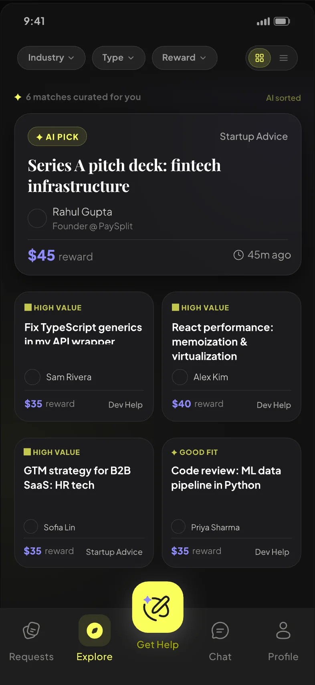
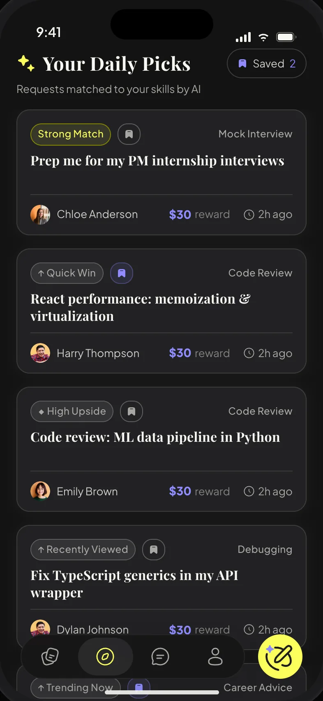
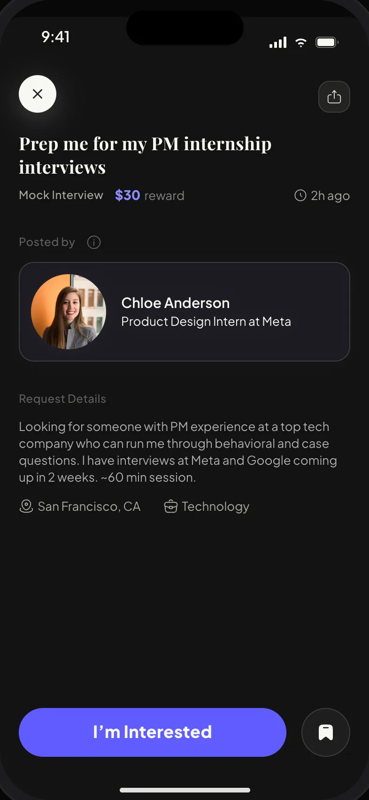
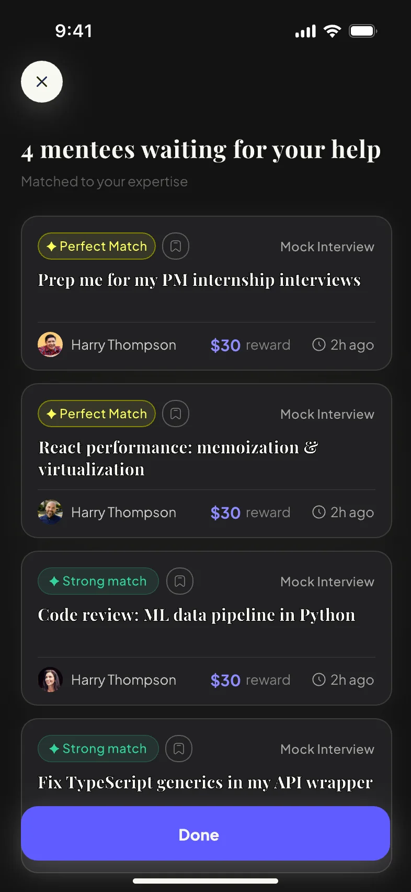

What this draft is for.
Three things the live case study currently leaves out: the calls you made, what each one changed, and what you took from it. The page today describes outcomes in the plural voice. These blocks put your judgment in front, in the first screen, and then prove each one further down.
Proposed place Block A sits between the four project cards and the cover image, so it is read before section 01. Stories 1, 2, and 3 become one new act, after 05 Decisions. Every fact marked in amber is waiting on you.
Three calls, and what each one changed.
Fifteen seconds of reading, placed before the story starts. Each entry names what you did, what it changed, and what you took from it, and links down to the full account.
New Version A1. Hairlines, no cards, three columns. The numbers are sans, the headings are the page serif.
I learned to bring the case, not just the idea.
- Did
- Started arriving with a reference, a reason it fit the quarter, and a small piece of research behind every proposal.
- Changed
- which proposal landed
- Took
- In a fast team, direction and priority decide what gets built. How interesting an idea is does not.
Two surfaces split the team, so I picked a different test for each.
- Did
- Ran an A/B test on the two Explore concepts and one-on-one sessions on the mentor flow, then walked the team through both.
- Changed
- Both surfaces shipped the way the tests pointed, and both are live today.
- Took
- Choosing the test is part of the judgment. An A/B test says which version wins. Sitting with one person says why.
Everyone shipped with AI, so I built the place where we check what is true.
- Did
- Set up version control in Figma, audited every live screen against design, front-end, and back-end, and wrote one update rule per role.
- Changed
- what it saved the team
- Took
- When AI makes production cheap, the scarce thing is a shared source of truth. Designing that is design work.
Alternative Version A2. The same information as one band: what you own on the left, what changed on the right. Denser, less narrative. Pick one, not both.
What I own
- Onboarding and first run
- Explore and daily picks
- Profile and premium
- The mentor-side AI flow
- Brand, launch, and marketing
What changed because of a call I made
Proposals that landA reference, a reason, and a small study behind each one. which proposal landed
Two surfaces, two testsAn A/B test on the Explore concepts, one-on-one sessions on the mentor flow, a decision from each.
One source of truthFigma version control, a full screen audit, and an update rule per role. what it saved
I learned to bring the case, not just the idea.
I arrived with ideas the way I had carried them through school: on their own, because they were interesting. A team shipping every week reads an idea differently. So I spent my first weeks watching how the people whose ideas moved forward put them. They never brought the idea alone.
New The visual is the point of the section: what an idea has to arrive with before a team can act on it. The four items attach one by one as it comes into view.
- A referenceSomeone has already shipped a version of this. Here is what it looked like, and what it cost them.
- A reason it is nowWhere it sits against what we already committed to this quarter, and what it would move ahead of.
- EvidenceA small study, a few users, enough to show the premise holds before anyone builds on it.
- A sizeWhat it takes to try the smallest version, so the room is deciding on a real number.
An interesting idea is not a reason to build something. In a fast team, direction and priority come first, and my job is to show where an idea sits against them.
Two surfaces split the team, and each one needed a different kind of proof.
Explore and the mentor flow both reached a point where the room could argue either direction from taste. I took both to users, but not the same way. Explore was a question about which version people would actually move through, so it could be measured. The mentor flow was a question about whether the path made sense at all, so it had to be watched.
New This is the revised 02. The point is no longer one disagreement, it is that choosing the method is part of the judgment. Each surface below uses the same template: the directions tried, the test, the result, the version that shipped.
Explore · A/B test
Cards at different sizes, or a drifting stream.
Two ways to show a helper what is waiting for them. Both were reasonable on paper, and the difference would show up in behaviour rather than in opinion, so I put them head to head.




Two directions, both defensibleNeither of us could say from the screens which one a helper would move through faster.
The version the test choseA short list that ends, with a reason written on every card.
What I ran
An A/B test between the two concepts. what it measured, how long it ran, how many people saw each version
What came back
the number that decided it
Mentor AI flow · User test
A flow you can measure after it works, and not before.
The mentor side had a different problem. The question was not which of two screens wins, it was whether a helper would understand the path and trust what came back. That is a question you have to sit and watch, so I ran it one-on-one and brought what I saw back to the team.



The path before the sessionsEverything asked up front, and a list at the end with no reason attached to it.
The path after themMost helpers reach matches in two taps, and the AI shows its work for a beat before getting out of the way.
What I ran
One-on-one sessions on the same tasks. how many people, what you asked them to do, when
What came back
the finding that changed the flow
Choosing the test is part of the judgment. An A/B test tells you which version wins. Sitting with one person tells you why, and what to build next. The work is running the one the question needs, not the one that is easiest to run.
Everyone shipped with AI, so I built the place where we check what is true.
Design, front-end, and back-end were all producing with AI, and the speed was real. It also meant a screen could be current in Figma, a version behind in the build, and different again in the back end, with each person right about their own copy. I took the question on, because the surfaces it hurt were mine.
New The diagram is the mechanism, not decoration: three lanes producing in parallel, drifting apart, then pulled back onto three checks. It runs once when it comes into view, and the button replays it.
Each dot is a change shipped by one role. The three checks are what I set up.
Version control in Figma
Every screen has one current state and a history, so there is no question which file is the live one.
A full screen audit
I went through every live screen against design, front-end, and back-end, and wrote down where they differed. how many screens
One rule per role
A short agreement on how an update travels, so a change reaches the build and the back end the same way every time.
When AI makes production cheap, the scarce thing is a shared source of truth. Designing that is design work, and it is the kind a product only notices when it is missing.
Every amber slot on this page, in one list.
Nothing here is invented. Each line is a number or an attribution I will not write until you give it to me.
- Story 2, the Explore A/B test. What it measured, how long it ran, roughly how many people saw each version, and the result that decided it.
- Story 2, the mentor sessions. How many people, what you asked them to do, when, and the finding that changed the flow.
- Story 2, the unused set. I am now showing
mentor-ai-inputandmentor-ai-matchesas the mentor path before the sessions. Confirm they are the earlier design and not something else. - Story 2, a line on the live page. Section 4.2 currently says the shipped Explore version was tested one-on-one with six mentors. If Explore was settled by the A/B test, that sentence needs to change too, and the six-mentor detail may belong to the mentor flow instead.
- Story 1, the result. One proposal that landed after you changed how you brought them, named plainly enough to say out loud in an interview.
- Story 3, the scale. How many screens you audited, and across how many builds.
- Story 3, the result. What the team stopped losing. Even a plain sentence works better than nothing.
- All three, when. Roughly which month each one happened, so the new act can sit in the timeline.